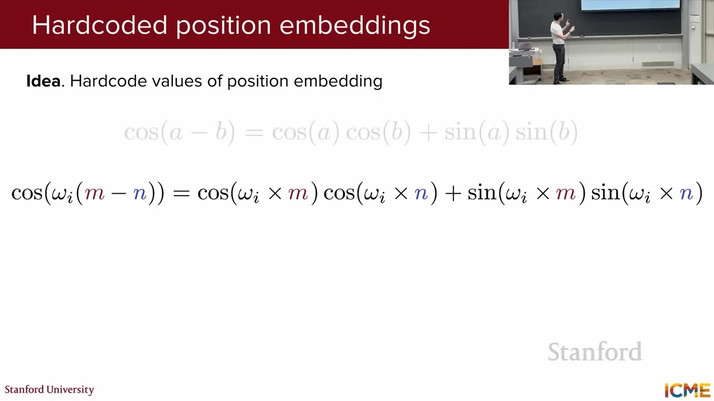
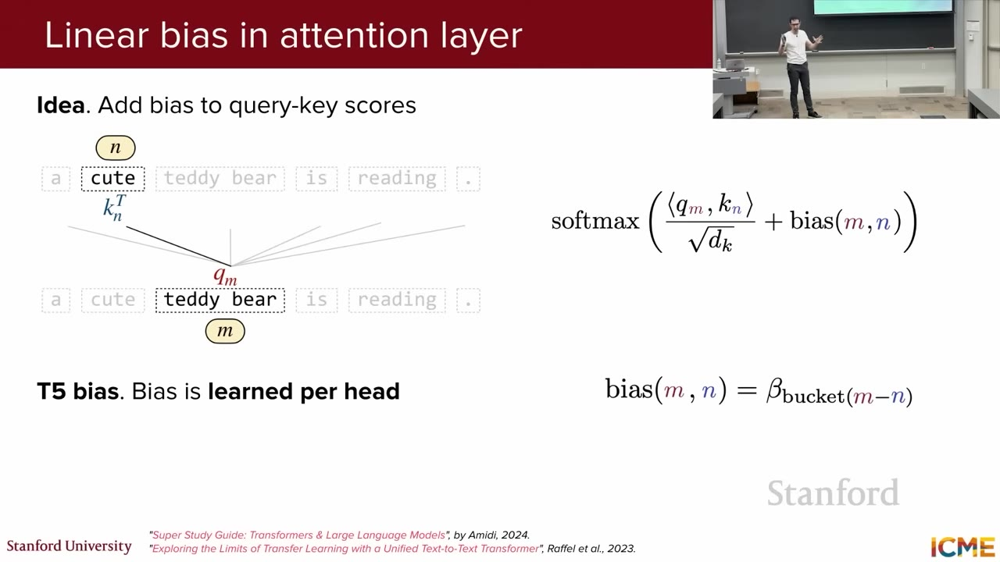
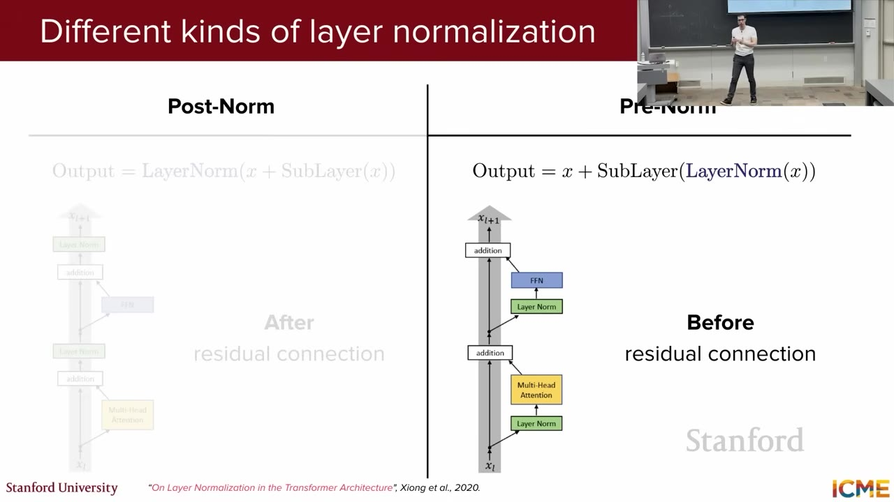
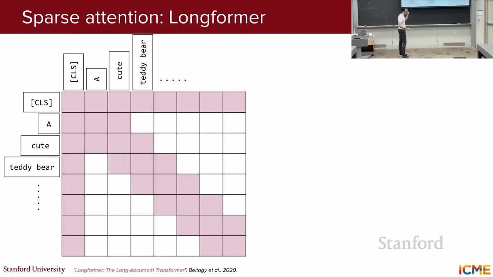
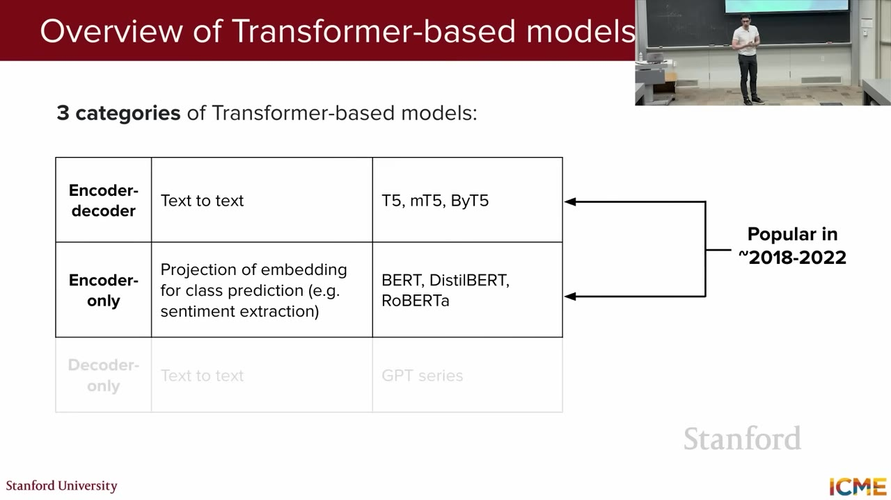
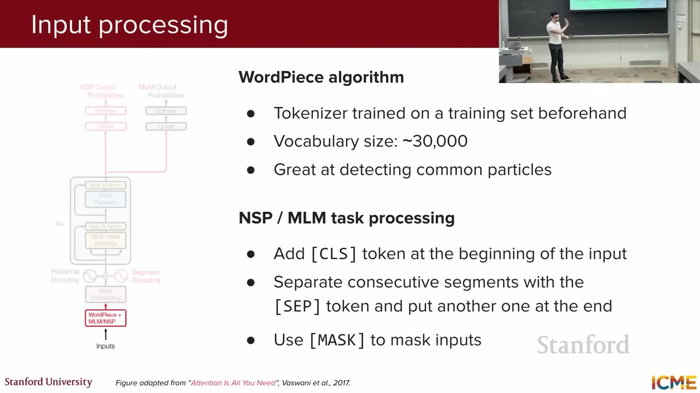
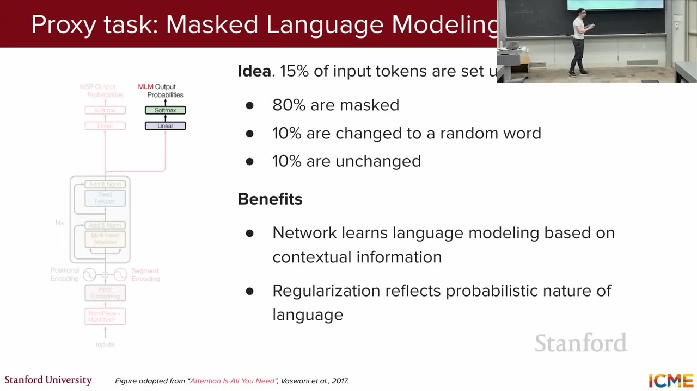
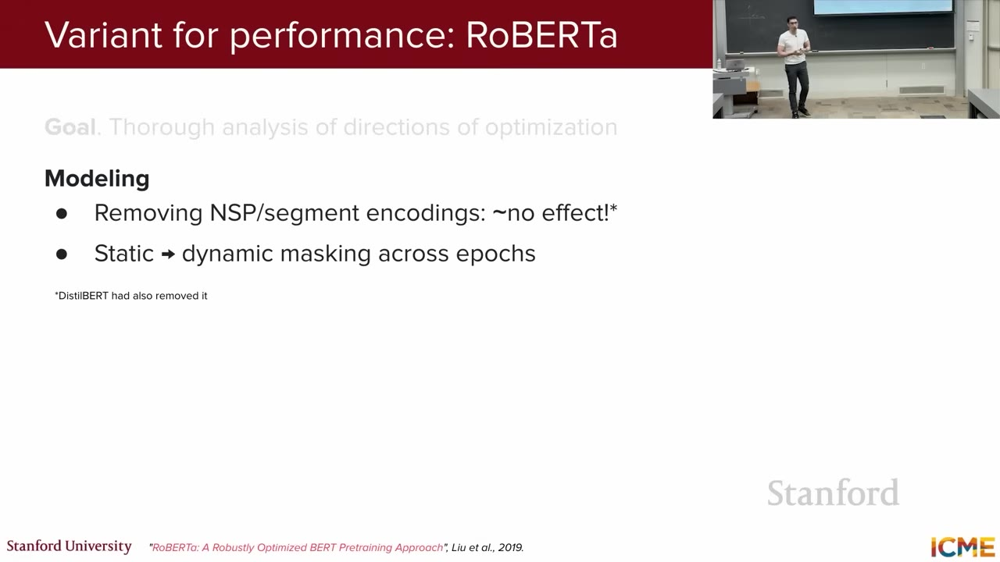

Relative Position Bias
Query–Key scoreへ相対距離に応じた値を加える方式。T5は距離bucketごとのhead別scalarを学ぶ。
出典: T52017年の Transformer を出発点に、位置表現、正規化、Attention の効率化、Encoder/Decoder の派生、BERT の事前学習とfine-tuningまで、現在へ続く設計変化を追う。
冒頭では、Lecture 1 の録音品質を受けて音響設定を変更したことと、当時12月10日を仮日程としていた期末試験を週前半へ移せるか検討中だと案内する。本編は前半を Afshine Amidi が Transformer の「変わった部品」、後半を Shervine Amidi がモデル系統と BERT に分けて解説する。
各 head は独自の WQ/WK/WV で入力を射影し、Attention を並列計算する。head ごとの結果を連結し、WO で再びモデル次元へ射影する。講義は元論文の attention map を使い、異なる head が照応や構文関係を別々に捉え得ることを示す。
QKT は raw score であり、通常「attention weight」と呼ぶのは scaling・mask・Softmax 後の値である。また可視化は関係を調べる手掛かりだが、モデル判断の因果的な説明と同一ではない。Jain & Wallace（NAACL 2019）は、attention weight だけを説明として扱うことへ注意を促している。
Self-attention は token 同士を直接結ぶため、RNN のような計算順序から位置を得られない。そこで token embedding に位置情報を注入する。Lecture 2 はまず、絶対位置を入力へ加える2方式を比較する。
| 方式 | 仕組み | 長所 | 制約 |
|---|---|---|---|
| Learned absolute | 位置ごとの埋め込み表を学習し、token embedding へ加算 | データから最適化できる | 表にない位置は直接扱えず、訓練長やデータの位置偏りに依存 |
| Sinusoidal | 位置と次元から sin/cos を計算し、token embedding へ加算 | 追加パラメータ不要で任意位置の値を計算可能 | 訓練長を超えた品質を保証せず、類似度は周期的 |

cos(ωi(m−n)) が現れ、絶対位置から相対距離を読み取れることを示す式。19:20各次元は異なる周波数を持ち、低い次元側は速く、高い次元側はゆっくり変化する。元論文では learned と sinusoidal がほぼ同等だったため、長い位置にも式を適用できる可能性を理由に sinusoidal を採った。
sinusoidal 値を訓練長より先で計算できることと、モデルがその長さへ正しく外挿できることは別である。また内積は相対距離の余弦和なので、同位置で最大になる一方、距離とともに単調減少するわけではなく周期的に振動する。
入力に位置ベクトルを足す代わりに、Attention の対応度を計算する場所へ位置を直接入れる方法が発展した。
図をクリックすると拡大・ドラッグ・ズームできます。

m−n を bucket 化し、head ごとの学習値を Softmax 前の score に加える。28:45| 方式 | Attentionへの反映 | 学習 | 相対距離の扱い |
|---|---|---|---|
| T5 relative bias | logit に bucket 対応scalarを加算 | head別に学習 | 近距離は細かく、遠距離は対数的にまとめ、最大距離以遠は同bucket |
| ALiBi | head別の傾き × 距離を logit から減算 | 傾きは固定 | 距離が遠いほど線形penalty。headごとに異なる受容範囲 |
| RoPE | Attention 前に Q/K の次元ペアを回転 | 角周波数は固定 | 回転後の内積が相対位置 n−m の関数になる |
RoPE（Rotary Position Embedding）は、Q と K の隣接する2次元ずつを、位置に比例する角度で回す。2次元の回転行列は次の形になる。
高次元ではQ/Kを2次元ペアへ分け、ペアごとに異なる周波数で回転する。Value は回転しない。多くの近年モデルで採用されるが、RoPE の類似度も sin/cos から成るため単調な近接biasではなく、長さ外挿の品質は追加のスケーリングや訓練条件にも依存する。
元 Transformer の “Add & Norm” は、sub-layer の入力を residual connection で出力へ足し、その後で LayerNorm を適用する。LayerNorm は1サンプル内の特徴次元に沿って平均と分散を求め、学習可能な γ と β で再スケール・シフトする。

| 方式 | 式の概略 | 特徴 |
|---|---|---|
| Post-Norm | LN(x + F(x)) | 元 Transformer と BERT。深いモデルでは初期勾配が不安定になりやすく、warm-upを要し得る。 |
| Pre-Norm | x + F(LN(x)) | Residual経路が直接残り、深いモデルの学習を安定させやすい。近年モデルで広く使われるが普遍ではない。 |
| RMSNorm | g ⊙ x / √(mean(x²)+ε) | 平均を引かず、βを持たず、RMSでスケールだけを整える軽量化。 |
| BatchNorm | batch内の同一特徴を正規化 | batch統計に依存し、訓練/推論差が生じる。TransformerではLayerNorm系が一般的。 |
講義では活性値の揺れを “internal covariate shift” と結び付ける。これは歴史的説明だが、Santurkar ら（NeurIPS 2018）は BatchNorm の効果を covariate shift の低減だけでは説明できず、最適化地形を滑らかにする効果を示した。LayerNormの有用性を単一原因へ還元しない方が正確である。
長さ n の各 token が全 token を見ると、score 行列は n×n になる。Self-attention の主要計算は O(n²d)、score/weight 行列の保存は head ごとに O(n²) で、長文ほど負担が急増する。

w 個だけを見る sliding-window attention は O(nw)。g 個を global にすると、全体は概ね O(nw + ng)。講義は、層ごとにlocalとglobalを交互に使う方式や、Mistralのように全層でwindowを使う方式を紹介する。後者では層を重ねるほど情報が伝播できる理論上の receptive field が広がるが、各層が直接見る範囲とモデルの実効context windowは同じではない。
Attention の別の効率化は、Query head の多様性を残しながら Key/Value head を共有すること。自己回帰Decoderは新tokenを生成するたびに過去のK/Vを再利用するため、K/Vのhead数がKV cacheの容量とmemory bandwidthへ直結する。
図をクリックすると拡大・ドラッグ・ズームできます。
| 方式 | Query heads | KV heads | 位置づけ |
|---|---|---|---|
| MHA | H | H | 各headが独自Q/K/V。元Transformer。 |
| GQA | H | G | H/G個のQuery headがK/Vを共有。品質と速度・cacheの折衷。 |
| MQA | H | 1 | 全Query headでK/Vを1組共有。cacheを最小化。 |
生成step t では新しいQだけを計算し、過去tokenのK/Vをlayerごとに保存して再利用する。概算容量は 2 × layers × sequence length × KV heads × head dimension × bytes。MQA/GQAはKV headsを減らし、decode時のcache読込量を削減する。GQAは近年よく見られるが、全モデルに共通する既定ではない。
後半は、元TransformerのEncoderとDecoderをどこまで残すかでモデルを3群に整理する。

| 系統 | Attention | 代表 | 主な用途 |
|---|---|---|---|
| Encoder–Decoder | Encoder full + Decoder causal + Cross-attention | Transformer、T5、mT5、ByT5 | 翻訳、要約、text-to-text変換 |
| Encoder-only | 双方向full Self-attention | BERT、DistilBERT、RoBERTa | 文分類、token分類、抽出型QA |
| Decoder-only | 因果mask付きSelf-attention | GPT系、多くの現代LLM | next-token prediction、生成、対話 |
T5（Text-to-Text Transfer Transformer）は全タスクをtext-to-textへ統一する。事前学習は、tokenの15%を平均長3の連続spanとして選び、sentinel token（<extra_id_0> 等）へ置き換え、Decoderが欠落spanをsentinel順に復元する span corruption。mT5は多言語版、ByT5は学習済みsubword tokenizerを使わずUTF-8 byte列を直接処理する。
UTF-8の文字は常に2 byteではない。ASCIIは1、アクセント付き文字は2、一般的な日本語の仮名・漢字は3、補助平面のemoji等は4 byteになり得る。ByT5は256種類のbyte値とspecial tokenを語彙にし、長くなりやすいbyte列を扱う。
BERT は Bidirectional Encoder Representations from Transformers。Decoderを外し、因果maskのないEncoder Self-attentionにより、各tokenが左右両方の文脈を見る。生成は不得意だが、分類や抽出に適したcontextual representationを作る。
同じ2018年のELMoも左右文脈を持つ表現を作ったが、2層のforward/backward LSTMを使うfeature-based方式で、再帰による並列化の難しさが残る。BERTはTransformer Encoderで深い双方向相互作用を実現し、事前学習済み本体を下流taskへfine-tuneする。

BERTのposition embeddingは学習型の絶対位置表で、元Transformerの固定sinusoidalではない。最大長は512。また元Transformer-baseは6 Encoder + 6 Decoder、BERT-baseは12 Encoderのみであり、「12層」の意味を区別する必要がある。
BERT は人手ラベルなしのraw textから自動的に教師信号を作る自己教師あり学習を行い、その後に少量のラベル付きdataで下流taskへfine-tuneする。
図をクリックすると拡大・ドラッグ・ズームできます。

[MASK]、10%をrandom token、10%を元のままにする。常に[MASK]へ変えないのは、fine-tuningや推論では[MASK]が現れないというpretrain–downstream差を弱めるためである。
文Aと文Bを[SEP]でつなぎ、50%は実際の次文（IsNext）、50%はcorpusから選んだrandom文（NotNext）とする。[CLS]の最終stateから二値分類し、文間関係を学ばせる狙いだった。
BERT論文は “unsupervised” という語も使うが、MLM/NSPはdata自身から正解を生成するため、現在はself-supervised（自己教師あり）と呼ぶ方が明確である。
事前学習済みBERTへ小さなtask-specific headを付ける。文分類は[CLS]、token分類は各token、抽出型QAは各tokenに対するanswer start/end scoreを使う。
[CLS]の最終state → Linear / FFN → class probability。
各tokenのcontextual stateへ同じ分類headを適用。
各位置へstart headとend headを適用し、回答spanを選ぶ。
Encoderを固定してheadだけ学習するfeature extractionも可能だが、BERT論文の標準手順は事前学習済み全パラメータと出力headを一緒に更新する。下流data量・計算予算・domain差に応じて一部を凍結するのは別の選択肢である。
teacher BERTのhard labelだけでなく、class間の相対関係を含むsoft probabilityをstudentへ学ばせる。temperatureで分布を柔らかくし、teacherとstudentの分布差をKL divergence等で縮める。DistilBERTはBERT-baseの12層から6層へ減らし、distillation loss、MLM loss、hidden stateを近づけるcosine lossを組み合わせる。

RoBERTa は NSP を除去しても性能低下がなく、dynamic masking、より大きいbatch、長いsequence、より大量で多様なdata、byte-level BPEなど学習条件を強化した。BERTが「十分に訓練されていなかった」ことを示し、architectureだけでなくdataとtraining recipeが性能を大きく左右すると結論付ける。
absolute addからrelative bias、Q/K rotationへ移り、score計算と位置を密接に結び付けた。
Pre-Norm/RMSNormは学習安定性、Sparse AttentionとGQAは長文・decode時memoryを改善する。
T5は変換、BERTは理解・分類、Decoder-onlyは生成へcomputeを集中する。
MLM/NSP、span corruption、next-token、distillation、dynamic maskingが表現の性質を決める。
Lecture 2 は「Transformer」という単一図を暗記するのではなく、どこへ位置を入れるか、何を共有するか、どのmaskを使うか、どの自己教師信号で学ぶかを追うことで、モデル名の違いを設計判断として読む視点を与える。
Query–Key scoreへ相対距離に応じた値を加える方式。T5は距離bucketごとのhead別scalarを学ぶ。
出典: T5Attention with Linear Biases。head別の固定傾きで距離に比例するpenaltyをlogitへ加え、長さ外挿を狙う。
出典: Press et al. (2022)Rotary Position Embedding。Q/Kの2次元ペアを位置角で回し、内積を相対位置の関数にする。
出典: RoFormerResidual加算後に正規化するか、sub-layer入力を先に正規化するかの違い。Pre-LNは深い学習を安定化しやすい。
出典: Xiong et al. (2020)平均を引かずroot mean squareでscaleを整える。LayerNormからre-centeringとβを省いた簡略形。
出典: Zhang & Sennrich (2019)各tokenのAttentionを近傍windowへ限定する疎Attention。Longformerはglobal tokenも組み合わせる。
出典: Longformerある上位表現へ情報が伝わり得る入力範囲。各層のwindowより層を重ねた範囲は広がるが、直接Attention範囲とは異なる。
出典: Mistral 7BQuery headは複数のままK/Vを全headまたはgroup内で共有し、KV cacheとdecode帯域を減らす。
MQA / GQA自己回帰生成で、過去tokenのKey/Valueをlayerごとに保存して再計算を避けるmemory領域。
出典: Fast Transformer Decoding連続token spanを固有のplaceholderへ置き換え、target側で欠落spanを復元するT5の事前学習。
出典: T5subword語彙を学習し、語を既知部分へ分割するtokenization。BERT英語版は約30k語彙。
出典: BERT文ペアのtokenがsegment A/Bのどちらかを示す学習ベクトル。token・position embeddingへ加算する。
出典: BERT §3.1MLMはmasked token復元、NSPは2文が連続かの分類。BERTの自己教師ありpretraining objectives。
出典: BERT §3.2大きいteacherのsoft output distributionを小さいstudentへ移し、知識を保ちながら圧縮する。
出典: Hinton et al. (2015)確率分布PをQで近似したときの情報差を測る非対称量。蒸留でteacherとstudentの分布を近づけるlossに使う。
出典: Distilling the Knowledge同じ文でもepochごとにMLM対象を選び直し、より多様なcorruption patternを見せるRoBERTaの手法。
出典: RoBERTa